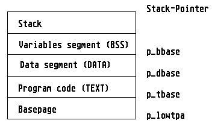

At the launch of a program it is very important to return surplus memory to the operating system with Mshrink, as otherwise there will be no memory available for other processes.
A compiler normally takes over this task automatically; an assembler programmer, however, has to perform this task himself. The corresponding routine may look something like the following:
.text
move.l 4(sp),a0 ; Pointer to BASEPAGE
lea mystack,sp ; Set stack pointer
move.l #$100,d0 ; Length of basepage
add.l $c(a0),d0 ; Length of the TEXT segment
add.l $14(a0),d0 ; Length of the DATA segment
add.l $1c(a0),d0 ; Length of the BSS segment
move.l d0,-(sp) ; Return to the stack
move.l a0,-(sp) ; Basepage address to stack
clr.w -(sp) ; Fill parameter
move.w #$4a,-(sp) ; Mshrink
trap #1 ; Call GEMDOS
lea $c(sp),sp ; Correct stack
jsr main ; Call main program
move.w d0,-(sp) ; Return value of the program
move.w #$4c,-(sp) ; Pterm
trap #1 ; Call GEMDOS
.bss
.ds.l 2000 ; 8000 bytes stack
mystack: .ds.l 2
In plain language: The required memory space is calculated by adding together the length of the basepage, the TEXT, the DATA and the BSS segments, as well as the stack (if necessary). All the required information resides in the basepage, whose address is passed as a parameter on the stack (4(sp)). The calculated value is then the number of bytes to which the TPA (Transient Program Area, memory range of a program) can be shrunk to.
After execution of this procedure, the TPA of a program then has the following form:

The memory released in this way can now be used by GEMDOS for other purposes: perhaps for launching further programs, or to satisfy memory allocations via Malloc or Mxalloc.
For a TSR program (Terminate and Stay Resident) too the required memory space can be found by the above method; the only difference is that programs of this type do not terminate themselves with Pterm but with Ptermres, and with this anchor themselves resident in memory.
See also: BASEPAGE Memory management